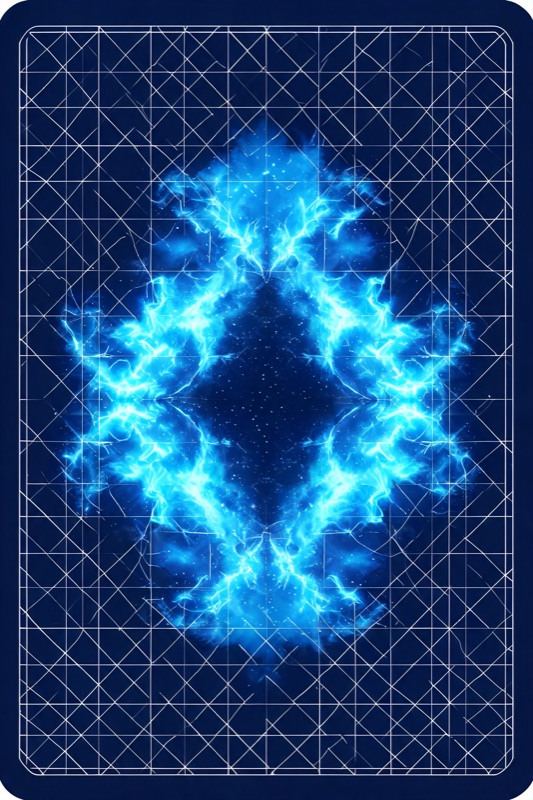

四副牌，每张都有收益，偶尔让你赔钱。有的牌堆会越抽越亏——抽完 100 手，看你的直觉多久能识破。
从四副牌中选一张翻面。每张牌先给你一笔收益，偶尔会赔钱。试试看哪副牌值得一直抽。

净分数 > 0 说明你在抽好堆（C/D），< 0 说明还在被坏堆（A/B）的纸面收益诱惑。健康受试者通常在 40-60 手后转正。
来源：Bechara A., Damasio A. R., Damasio H., & Anderson S. W. (1994). Insensitivity to future consequences following damage to human prefrontal cortex. Cognition, 50(1-3), 7-15.